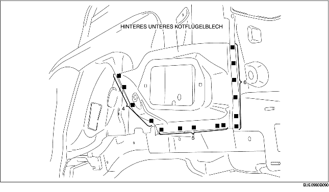
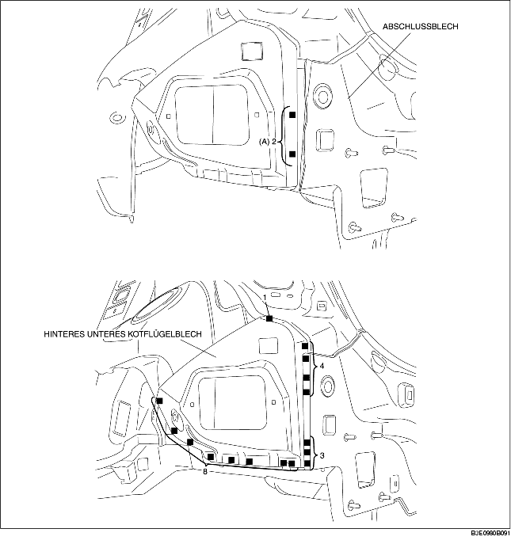

1. Beim Einbau neuer Teile, das Chassis falls erforderlich entsprechend der Standardabmessungen messen und einstellen.
2. Vor dem Einbau neuer Teile Löcher für das Lochschweißen aufbohren.
3. Nach der provisorischen Befestigung der neuen Teile sicherstellen, dass die zugehörigen Teile richtig passen.

1. Beim Einbau neuer Teile, das Chassis falls erforderlich entsprechend der Standardabmessungen messen und einstellen.
2. Vor dem Einbau neuer Teile Löcher für das Lochschweißen aufbohren.
3. Die 2 in (A) gezeigten Schweißstellen schweißen und das hintere untere Kotflügelblech einbauen.
4. Nach der provisorischen Befestigung der neuen Teile sicherstellen, dass die zugehörigen Teile richtig passen.
